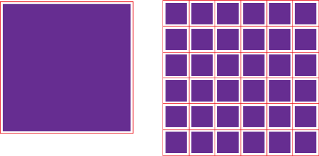
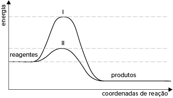

Líquido gelado faz comprimido efervescente borbulhar devagar
Por que os comprimidos efervescentes se dissolvem mais rápido em água natural do que em água gelada?
Porque o calor ajuda na reação. O comprimido é formado basicamente por carbonato, bicarbonato de sódio e um ácido. Quando colocadas na água, essas substâncias reagem. Como em qualquer outra combinação química, o calor acelera o
processo. “Para que uma reação aconteça, é preciso que as moléculas das substâncias envolvidas se choquem umas com as outras”, explica o químico Atílio Vanin, da Universidade de São Paulo.
Se a água estiver muito fria, o movimento das moléculas será bem menor e a chance de elas trombarem também é pequena. À medida que a água esquenta, aumentam as chances da colisão e consequentemente a reação passa a ocorrer com
maior rapidez.
No texto, vimos que a temperatura é um fator importante para a velocidade de uma reação. Quais outros fatores você imagina que possam alterar o tempo de duração das reações?
É possível evitar que uma reação aconteça pelo simples fato de diminuir sua temperatura?
Uma prática bastante comum para o cozimento de carnes é cortá-las em pedaços de mesmo tamanho. Esse procedimento acelera o processo e possibilita o cozimento uniforme. Por que essa ação afeta a velocidade da reação?
Neste capítulo serão abordadas as habilidades
EM13CNT205
,
EM13CNT301
e
EM13CNT303
.
Mais
Velocidade de reação, Experimentoteca.
Neste canal, você encontra diversos vídeos de experimentos, incluindo exemplos de fatores que influenciam na velocidade das reações.
No capítulo anterior, você estudou que algumas reações são rápidas, na ordem de segundos, enquanto outras são tão lentas que podem levar anos para acontecer. Além disso, você aprendeu como calcular a velocidade de reações e a energia
de ativação.
Agora imagine que um químico precise realizar uma síntese que levaria uma semana para ocorrer. Seria possível acelerar esse processo?
Como você verá a seguir, é possível modificar a velocidade das reações alterando alguns fatores no processo, como a temperatura, a concentração dos reagentes, a pressão, a superfície de contato e o uso de catalisadores.
Temperatura
p class="general-text">Uma das maneiras mais utilizadas para conservar os alimentos é estocá-los na geladeira. Você sabe o motivo de fazermos isso? Acontece que, em temperaturas baixas, as reações químicas responsáveis pela decomposição dos alimentos
têm sua velocidade diminuída. Alterar a temperatura do meio reacional afeta o grau de agitação das partículas reagentes e, consequentemente, modifica a velocidade da reação.
Quando diminuímos a temperatura do sistema, as partículas reagentes se movimentam com menor energia e, com isso, as chances de ocorrer choques efetivos é reduzida. Como consequência, há uma redução da velocidade de reação.
O mesmo raciocínio pode ser utilizado quando a temperatura do sistema é aumentada: eleva-se o grau de agitação das partículas reagentes, bem como a chance de choques efetivos ocorrerem. Isso resulta em um aumento da velocidade
de reação.
YinYang/iStockphoto.com
Geladeira aberta com diversos alimentos.
↑ Temperatura = ↑ Velocidade
Concentração dos reagentes
No cotidiano de um laboratório, é comum utilizarmos reagentes em excesso para sintetizarmos produtos, porque a alteração da concentração dos reagentes em um meio reacional também interfere na velocidade de uma reação. O aumento
da concentração dos reagentes provoca uma elevação da velocidade da reação, pois significa que há um número maior de partículas reagentes por unidade de volume de solução, o que resulta em um aumento da taxa de choques entre
elas. Em outras palavras, há maior probabilidade de choques efetivos.
No recipiente da esquerda, há menor quantidade de partículas reagentes e, portanto, menores chances de choques efetivos entre elas. No recipiente da direita, há maior quantidade de partículas reagentes; dessa forma, há maiores
chances de choques efetivos entre elas.
↑ [Reagentes] = ↑ Velocidade
Pressão
A pressão só afeta a velocidade das reações se pelo menos um dos reagentes se encontrar no estado gasoso, como é o caso da síntese de Haber-Bosch – ou síntese da amônia –, que se processa a 200 atm. Ao aumentarmos a pressão de
um gás, causamos uma redução em seu volume; consequentemente, a substância se torna mais concentrada, o que acelera a reação.
Aumento de pressão, diminuição de volumes, maiores chances de colisões entre os reagentes.
↑ Pressão para reagentesgasosos = ↑ Velocidade
Superfície de contato
Podemos observar no supermercado que um pedaço inteiro de queijo ou de presunto, sem cortes, apresenta um prazo de validade maior do que o mesmo produto vendido em fatias. Isso acontece por causa da superfície de contato. Denomina-se
superfície de contato a área do reagente disponível para sofrer choques que resultarão na formação de produtos. Quanto maior for a superfície de contato da substância, maior será sua taxa de choques e, consequentemente, a probabilidade
de choques efetivos, o que resulta em um aumento da velocidade da reação. A superfície de contato afeta apenas os reagentes sólidos.

Observe a comparação da superfície de contato em uma peça inteira (à esquerda) e em uma peça fragmentada (à direita). As linhas vermelhas indicam a região disponível para as colisões. Note que a peça inteira tem menos pontos disponíveis
para contato do que a peça fragmentada.
Nigel Stripe/iStockphoto.com
Fertnig/iStockphoto.com
Admitindo que os pregos de aço e a palha de aço apresentam a mesma massa e composição e que estão no mesmo ambiente, qual dos materiais enferrujaria primeiro?
↑ Superfície de contatopara reagentessólidos = ↑ Velocidade
Denomina-se catálise qualquer reação que tenha um catalisador.
Catalisadores
O catalisador aumenta a velocidade de uma reação, sendo consumido em uma das etapas da reação e regenerado em outra – portanto, não pode ser considerado reagente. O que define qual substância deve ser utilizada para catalisar a reação é a própria reação
e seus componentes. Por exemplo, a reação entre o hidrogênio gasoso e o oxigênio gasoso, também chamada de
catálise , pode ser catalisada pela platina:
A platina, no entanto, não age como catalisador para todas as reações químicas. A decomposição do etanol, por exemplo, é catalisada pelo óxido de alumínio AL2O3:
O catalisador fornece um caminho de reação alternativo e com energia de ativação menor. Isso resulta em aumento da velocidade de reação, pois, como vimos no capítulo anterior, quanto menor for a energia de ativação, maior será
a velocidade reacional.
Observe no gráfico que o catalisador não altera a energia dos reagentes nem a dos produtos, somente diminui a energia de ativação.
De maneira simplificada, o catalisador se liga aos reagentes para formar um novo complexo ativado com menor energia; depois, essas ligações se rompem e regeneram o catalisador.
... enzimas são compostos orgânicos presentes no nosso organismo que apresentam ação catalisadora de reações químicas importantes para o bom funcionamento do corpo humano. Sem elas, muitos processos biológicos imprescindíveis
não ocorreriam.
Questão resolvida
1
UEPG-PR Nos tubos de ensaio A, B, C e D foram adicionados 2 g de zinco e 10 mL de ácido clorídrico 1 mol/L. A diferença entre os tubos é a granulometria do zinco e a temperatura. Observou-se o desprendimento de gás
nos 4 tubos. A partir do esquema ao lado, que representa o início do processo, assinale o que for correto.
01.
A velocidade da reação é maior no tubo B do que no tubo A.
02.
O tubo que apresenta a maior velocidade de reação é o D.
04.
A reação que ocorre é Zn(s) + 2 HCℓ(aq) ➝ ZnCℓ2(aq) + H2(g).
08.
O tubo C apresenta uma velocidade de reação maior que no tubo B, porque a superfície de contato do zinco é maior no tubo C.
16.
A velocidade de reação do Zn nos tubos obedece à seguinte ordem: A < B < C < D.
Soma:
Resolução:
Soma: 01 + 02 + 04 + 08 + 16 = 31
Afirmativa 01: correta. A velocidade da reação é maior no tubo B do que no tubo A, pois a temperatura em B é maior do que em A.
Afirmativa 02: correta. O tubo que apresenta a maior velocidade de reação é o D, pois apresenta a maior superfície de contato e a maior temperatura.
Afirmativa 04: correta. A reação que ocorre é Zn(s) 1 2 HCℓ(aq) ➝ ZnCL2(aq) 1 H2(g).
Afirmativa 08: correta. O tubo C apresenta uma velocidade de reação maior do que a do tubo B, porque a superfície de contato em C é maior.
Afirmativa 16: correta. A velocidade de reação do Zn obedece à seguinte ordem: A < B < C < D
2
Unesp O esquema apresentado descreve os diagramas energéticos para uma mesma reação química, realizada na ausência e na presença de um agente catalisador.

Com base no esquema, responda qual a curva que representa a reação na presença do catalisador.
Explique sua resposta e faça uma previsão sobre a variação de entalpia dessa reação na ausência e na presença do catalisador.
Resolução:
O catalisador diminui a energia de ativação do sistema, pois altera o caminho da reação. Logo, a curva II representa a reação na presença do catalisador. O valor da variação de entalpia permanece constante.
Experimento
Influência da temperatura e da superfície de contato na velocidadeda reação
Este experimento simples deve ser realizado em duas etapas. Na primeira, vamos verificar a influência da temperatura na reação de dissolução de um comprimido efervescente em água; na segunda, vamos verificar a influência
da superfície de contato na velocidade da mesma reação. Importante: siga sempre as orientações do seu professor e utilize os Equipamentos de Proteção Individual (avental, óculos de segurança etc.) durante toda a execução.
Os materiais utilizados podem ser descartados na pia e no lixo comum.
Objetivo
Verificar como a velocidade de uma reação é alterada pela temperatura e pela superfície de contato.
Materiais
4 comprimidos efervescentes (de vitamina C ou de antiácido);
4 copos medidores;
chapa aquecedora;
espátula;
vidro de relógio;
termômetro.
Procedimentos
Primeira etapa
Adicione o mesmo volume de água em temperatura ambiente em dois copos medidores.
Separe um dos copos e leve o outro à chapa aquecedora para aquecer a água até 60 °C.
Após o aquecimento, adicione simultaneamente um comprimido efervescente em cada copo com água.
Observe o tempo que leva para que os comprimidos sejam totalmente dissolvidos.
Segunda etapa
Nos dois copos restantes, adicione o mesmo volume de água em temperatura ambiente utilizado na etapa anterior.
Use o vidro de relógio e a espátula para macerar um dos comprimidos efervescentes restantes, mantendo o outro inteiro.
Adicione simultaneamente um comprimido efervescente em cada copo com água.
Observe o tempo que leva para que os comprimidos sejam totalmente dissolvidos.
1
Qual dos comprimidos foi consumido mais rápido na primeira etapa do experimento: o do copo quente ou do copo em temperatura ambiente? Justifique.
2
Na segunda etapa, qual dos comprimidos reagiu de maneira mais rápida: o macerado ou o inteiro? Justifique.
Aplicando conhecimentos
1
A síntese Haber-Bosch produz a amônia (NH3), substância amplamente utilizada em fertilizantes. A reação pode ser representada da seguinte maneira:
N2(g) + 3 H2(g) ⥦ 2 NH3(g)
Ela deve ocorrer sob pressão de 200 atm, temperatura de 450 °C e na presença do ferro, que atua como catalisador. Analisando as informações fornecidas, a síntese de Haber-Bosch é lenta ou rápida nas condições normais de temperatura
e pressão? Justifique.
2
Um cientista gotejou ácido sulfúrico em um cristal maciço de cloreto de sódio e anotou o tempo que a reação levou para ocorrer. Depois, ele gotejou o ácido sulfúrico de mesma concentração no cloreto de sódio em forma de pó
e anotou novamente o tempo de reação. Qual tempo anotado foi maior?
3
Assinale o que for
incorreto sobre catalisadores.
Diminuem a energia de ativação da reação.
Não alteram o produto formado.
Aumentam o valor do DH da reação.
Não são consumidos durante a reação.
4
Uma reação química bastante comum em qualquer laboratório é a neutralização de um resíduo ácido por uma substância de caráter básico antes de seu descarte, de modo a não agredir o ambiente. O carbonato de cálcio é utilizado
com frequência para esse fim. Acompanhe o exemplo:
2 HCℓ(aq) + CaCO3(s) ➝ CaCℓ2(s) + H2O(ℓ) + CO2(g)
Caso a pressão do meio reacional fosse aumentada de 1 atm para 5 atm, o que aconteceria com a velocidade dessa reação? Justifique.
5
Com base no que você estudou em Cinética Química, justifique por que armazenamos alimentos perecíveis na geladeira.
6
Fuvest-SP 2020 Numa determinada condição experimental e com o catalisador adequado, ocorre uma reação, conforme representada no gráfico, que relaciona porcentagem do composto pelo tempo de reação.
Uma representação adequada para esse processo é:
Limoneno ⥦
p -cimeno ➝ α-terpineno
Limoneno a-terpineno
Limoneno 1
p -cimeno Ô a-terpineno
Limoneno
p -cimeno
Limoneno ➝ a-terpineno ➝
p -cimeno
Consolidando saberes
1
Fuvest-SP 2019 Um antiácido comercial em pastilhas possui, em sua composição, entre outras substâncias, bicarbonato de sódio, carbonato de sódio e ácido cítrico. Ao ser colocada em água, a pastilha dissolve-se completamente
e libera gás carbônico, o que causa a efervescência. Para entender a influência de alguns fatores sobre a velocidade de dissolução da pastilha, adicionou-se uma pastilha a cada um dos quatro recipientes descritos na tabela,
medindo-se o tempo até a sua dissolução completa.
Para todos os experimentos, foi usada água mineral da mesma marca. Considere a água com gás como tendo gás carbônico dissolvido.
Com base nessas informações, é correto afirmar que
o uso da água com gás, ao invés da sem gás, diminui a velocidade de dissolução da pastilha em cerca de 50%, uma vez que, como já possui gás carbônico, há o deslocamento do equilíbrio para a formação dos reagentes.
o uso da água com gás, ao invés da sem gás,aumentou a velocidade de dissolução da pastilha em cerca de 33%, uma vez que o gás carbônico acidifica a água, aumentando a velocidade de consumo do carbonato de sódio.
nem a mudança de temperatura nem a adição de gás carbônico na solução afetaram a velocidade da reação, uma vez que o sistema não se encontra em equilíbrio.
o aumento da temperatura da água, de 4 °C para 25 °C, levou a um aumento na velocidade da reação, uma vez que aumentou a frequência e a energia de colisão entre as moléculas envolvidas na reação.
o aumento da temperatura da água, de 4 °C para 25 °C, levou a um aumento na velocidade da reação, uma vez que facilita a liberação de gás carbônico da solução, deslocando o equilíbrio para a formação dos reagentes.
2
Unioeste-PR 2018 Atualmente, a indústria química se utiliza de uma vasta gama de catalisadores, que possuem a vantagem de tornarem as reações mais rápidas com menores custos. O gráfico a seguir representa a variação
de energia de uma reação qualquer na presença e na ausência de catalisador.
Pela análise do gráfico, pode-se afirmar que
a reação A é exotérmica e a B é endotérmica.
a curva B representa a reação sem catalisador.
o valor de y representa a energia de ativação da reação não catalisada.
o valor de (x - y) representa a energia de ativação da reação catalisada.
o valor de z representa a energia inicial dos reagentes.
3
Uerj 2018 Observe no gráfico os valores de entalpia ao longo do caminho de uma reação de hidrogenação no pent-2-eno, em duas condições: presença e ausência de catalisador.
Indique a curva que representa a reação química na presença de catalisador e calcule, em kJ/mol, sua energia de ativação. Determine, ainda, a variação de entalpia dessa reação, em kJ/mol, e nomeie o produto formado.
4
UEPG-PR 2016 Considere a seguinte reação genérica: A 1 B ➝ C 1 D. A seguir, é representado o gráfico de variação da entalpia da reação genérica acima, na ausência e presença do catalisador.
Sobre o gráfico, assinale o que for correto.
01.
A energia de ativação na ausência do catalisador é 40 kcal.
02.
A energia de ativação na presença do catalisador é 30 kcal.
04.
A variação entre a energia de ativação na ausência e presença do catalisador é de 10 kcal.
08.
A reação é exotérmica.
16.
A variação de entalpia da reação é de –25 kcal.
Soma:
5
Acafe-SC 2021 Diversos processos químicos utilizam, atualmente, catalisadores com o objetivo de tornar o processo mais vantajoso economicamente. Os catalisadores atuam em um processo químico sem serem consumidos.
Em relação aos catalisadores, são feitas as seguintes afirmações:
O catalisador aumenta ou diminui a velocidade de uma reação química, modificando o seu equilíbrio químico.
A energia de ativação de uma reação química aumenta com a presença de um inibidor, diminuindo a velocidade da reação.
A catálise homogênea ocorre quando o catalisador está na mesma fase dos reagentes em um processo químico.
Em reações reversíveis, a velocidade da reação direta será aumentada pela presença do catalisador, enquanto que a velocidade da reação inversa não sofrerá alteração.
A adição de um catalisador a uma reação química não altera a variação de entalpia do sistema.
Todas as afirmações
corretas estão em:
II – III – V
I – III – V
I – II – IV
III – IV – V
6
Unicamp-SP 2020 Um dos pilares da nanotecnologia é o fato de as propriedades dos materiais dependerem do seu tamanho e da sua morfologia. Exemplo: a maior parte do H2 produzido industrialmente advém da reação de reforma
de hidrocarbonetos: CH4(g) 1 H2O(g) ➝ 3 H2(g) 1 CO(g). Uma forma de promover a descontaminação do hidrogênio é reagir o CO com largo excesso de água:
CO(g) + H2O(g) ➝ CO2(g) + H2(g);
ΔH = 241,6 kJ ∙ mol-1
A figura abaixo mostra resultados da velocidade (em unidade arbitrária, ua) dessa conversão em função da temperatura, empregando-se um nanocatalisador com duas diferentes morfologias.
Considerando essas informações, é correto afirmar que, com essa tecnologia, a descontaminação do hidrogênio por CO é mais eficiente na presença do catalisador em forma de
nanobastão, pois a transformação do CO ocorreria em temperaturas mais baixas, o que também favoreceria o equilíbrio da reação no sentido dos produtos, uma vez que a reação é exotérmica.
nanobastão, pois a transformação do CO ocorreria em temperaturas mais baixas, o que também favoreceria o equilíbrio da reação no sentido dos produtos, uma vez que a reação é endotérmica.
nanocubo, pois a transformação do CO ocorreria em temperaturas mais elevadas, o que também favoreceria o equilíbrio da reação no sentido dos produtos, uma vez que a reação é exotérmica.
nanocubo, pois a transformação do CO ocorreria em temperaturas mais elevadas, o que também favoreceria o equilíbrio da reação no sentido dos produtos, uma vez que a reação é endotérmica.